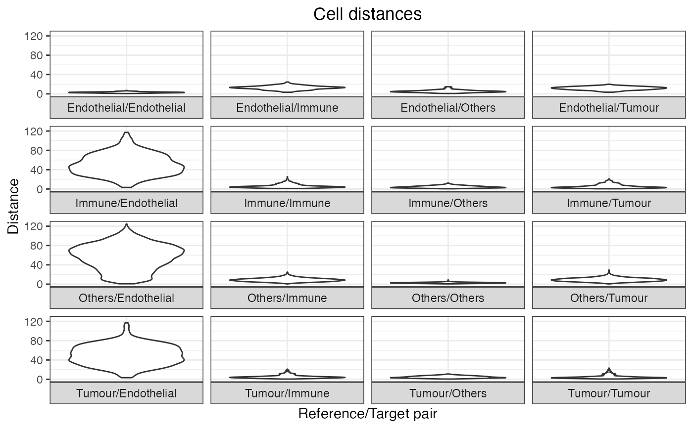

R/plot_distances_between_cell_types_violin3D.R
plot_distances_between_cell_types_violin3D.RdThis function plots the distances between cell types data as violin plots, showing the distances for each cell type pair.
plot_distances_between_cell_types_violin3D(distances_df, scales = "free_x")A data frame obtained from the output of the calculate_pairwise_distances_between_cell_types3D or calculate_minimum_distances_between_cell_types3D functions.
A string to control the facet wrap scales of the ggplot object. Either "fixed", "free_x", "free_y" or "free". Would not recommend "free_y". Defaults to "free_x".
A ggplot object containing the violin plots.
# Get simulated SpatialExperiment object to use as an example for analysis
simulated_spe <- readRDS(system.file("extdata", "simulated_spe.rds", package = "SPIAT3D"))
# Calculate minimum distances from simulated spe
minimum_distances <- calculate_minimum_distances_between_cell_types3D(
spe = simulated_spe,
cell_types_of_interest = NULL,
feature_colname = "Cell.Type",
show_summary = TRUE,
plot_image = FALSE
)
#> pair mean min max median std_dev
#> 1 Endothelial/Endothelial 2.979453 0.6831898 6.937478 2.925393 1.104779
#> 2 Endothelial/Immune 12.654097 3.3221814 24.479371 12.911569 3.879947
#> 3 Endothelial/Others 5.328105 0.7943177 14.724923 4.880922 2.596639
#> 4 Endothelial/Tumour 11.576752 3.4067634 19.825019 11.646110 3.224015
#> 5 Immune/Endothelial 50.726244 3.3221814 117.108044 48.779054 21.834912
#> 6 Immune/Immune 5.860977 1.1111424 25.306576 4.770140 3.753818
#> 7 Immune/Others 4.402321 0.5099885 12.159201 3.984803 2.166658
#> 8 Immune/Tumour 5.485948 0.5010763 20.592097 4.036541 3.912928
#> 9 Others/Endothelial 56.347373 0.7943177 124.401031 58.879693 25.909955
#> 10 Others/Immune 8.917021 0.5099885 24.974685 8.621085 3.673304
#> 11 Others/Others 2.711372 0.5218880 8.882190 2.659742 1.023207
#> 12 Others/Tumour 9.284483 0.5134595 29.495659 8.993733 3.865217
#> 13 Tumour/Endothelial 50.255591 3.4067634 117.009810 50.625863 20.600120
#> 14 Tumour/Immune 5.125293 0.5010763 21.044513 4.266425 3.248407
#> 15 Tumour/Others 4.697746 0.5134595 10.943291 4.375426 2.164845
#> 16 Tumour/Tumour 4.733487 0.6332032 23.159638 3.635878 3.573109
#> reference target
#> 1 Endothelial Endothelial
#> 2 Endothelial Immune
#> 3 Endothelial Others
#> 4 Endothelial Tumour
#> 5 Immune Endothelial
#> 6 Immune Immune
#> 7 Immune Others
#> 8 Immune Tumour
#> 9 Others Endothelial
#> 10 Others Immune
#> 11 Others Others
#> 12 Others Tumour
#> 13 Tumour Endothelial
#> 14 Tumour Immune
#> 15 Tumour Others
#> 16 Tumour Tumour
# Plot
fig <- plot_distances_between_cell_types_violin3D(
distances_df = minimum_distances,
scales = "free_x"
)
#> Plots show mean ± sd
methods::show(fig)
#> Warning: Computation failed in `stat_summary()`.
#> Caused by error in `fun.data()`:
#> ! The package "Hmisc" is required.
#> Warning: Computation failed in `stat_summary()`.
#> Caused by error in `fun.data()`:
#> ! The package "Hmisc" is required.
#> Warning: Computation failed in `stat_summary()`.
#> Caused by error in `fun.data()`:
#> ! The package "Hmisc" is required.
#> Warning: Computation failed in `stat_summary()`.
#> Caused by error in `fun.data()`:
#> ! The package "Hmisc" is required.
#> Warning: Computation failed in `stat_summary()`.
#> Caused by error in `fun.data()`:
#> ! The package "Hmisc" is required.
#> Warning: Computation failed in `stat_summary()`.
#> Caused by error in `fun.data()`:
#> ! The package "Hmisc" is required.
#> Warning: Computation failed in `stat_summary()`.
#> Caused by error in `fun.data()`:
#> ! The package "Hmisc" is required.
#> Warning: Computation failed in `stat_summary()`.
#> Caused by error in `fun.data()`:
#> ! The package "Hmisc" is required.
#> Warning: Computation failed in `stat_summary()`.
#> Caused by error in `fun.data()`:
#> ! The package "Hmisc" is required.
#> Warning: Computation failed in `stat_summary()`.
#> Caused by error in `fun.data()`:
#> ! The package "Hmisc" is required.
#> Warning: Computation failed in `stat_summary()`.
#> Caused by error in `fun.data()`:
#> ! The package "Hmisc" is required.
#> Warning: Computation failed in `stat_summary()`.
#> Caused by error in `fun.data()`:
#> ! The package "Hmisc" is required.
#> Warning: Computation failed in `stat_summary()`.
#> Caused by error in `fun.data()`:
#> ! The package "Hmisc" is required.
#> Warning: Computation failed in `stat_summary()`.
#> Caused by error in `fun.data()`:
#> ! The package "Hmisc" is required.
#> Warning: Computation failed in `stat_summary()`.
#> Caused by error in `fun.data()`:
#> ! The package "Hmisc" is required.
#> Warning: Computation failed in `stat_summary()`.
#> Caused by error in `fun.data()`:
#> ! The package "Hmisc" is required.
